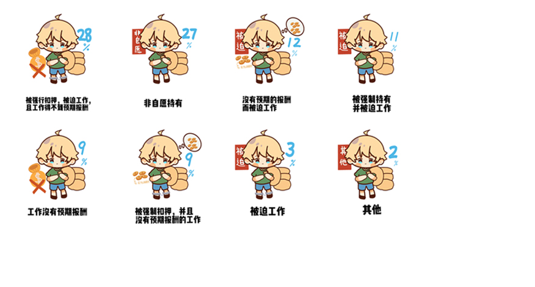

除了被恶意拘禁，人口贩卖也被看作儿童移民在迁徙途中面临的最严重的剥削风险。
2017年意大利国际移民组织对抵达意大利的儿童移民进行调查，
发现有78%的人报告了他们存在被贩运和或以其他方式被剥削的经历，这个比例远高于成年受害者。
儿基会经过调查发现，被贩运儿童的脆弱性导致他们可能被走私者强迫劳动、遭受性剥削、进行童婚等。
这本来是违背自身意愿的，但他们别无他法。
如此痛苦的创伤经验将严重影响他们的身心健康，并损害未来的发展与教育。
图7 儿童移民的最常见的剥削经历

数据来源：UNICEF：Children and youth on the move across the Mediterranean Sea, at risk of trafficking and exploitation（2017）
成为贩卖者的目标受多种因素决定
一个人是否会成为贩运和剥削的牺牲品取决于一系列因素——所有这些因素交织到一起。 研究发现，来源地、教育、年龄、是否有随行者等因素都会减轻或者增加沿途被攻击的风险。
约有三分之二来自撒哈拉以南非洲的儿童移民报告遭到贩卖和剥削，这一比率相比其他地区的同龄人高出四倍以上， 该差异在地中海中部航线上非常明显。这要归根于世界各地普遍存在的种族主义和仇外心理， 导致可能仅针对来自某一区域的移徙者实施暴力和虐待。
“性别如何塑造儿童的移徙经历？”
一个人是否会成为贩运和剥削的牺牲品取决于一系列因素——所有这些因素交织到一起。 研究发现，来源地、教育、年龄、是否有随行者等因素都会减轻或者增加沿途被攻击的风险。 我们注意到，男孩和女孩在移徙途中的体验也存在较大的差异。2020年， 战争迫使1000万儿童跨越国界成为难民，其中有490万是女孩。 所以性别如何在不确定的途径中塑造儿童的经历也是值得思考的问题。
高成本
一般而言，作出移徙决定的女孩通常必须寻求家⼈的批准， 并且为这些选择⾯临⽐男孩更⼤更高的社会成本。而且⼥孩的独立受到⾼度侮辱，因为它被视为打破了深闺， 以这种方式背离传统可能会提高女性结婚时的嫁妆成本。性暴力
与此同时，女孩也会首当其冲地遭受基于性别的暴力。在一项针对抵达欧洲的⼥孩和妇⼥的调查中， 二分之一的人表示，威胁或个⼈暴⼒是离开的主要原因。 其中包括家庭暴力、宗教歧视、性取向或性别认同、反对婚姻或迫害威胁。图8 1990-2020年按性别划分的国际儿童移民人数

数据来源：UNICEF：Uncertain Pathways: How gender shapes the experiences of children on the move(2021)